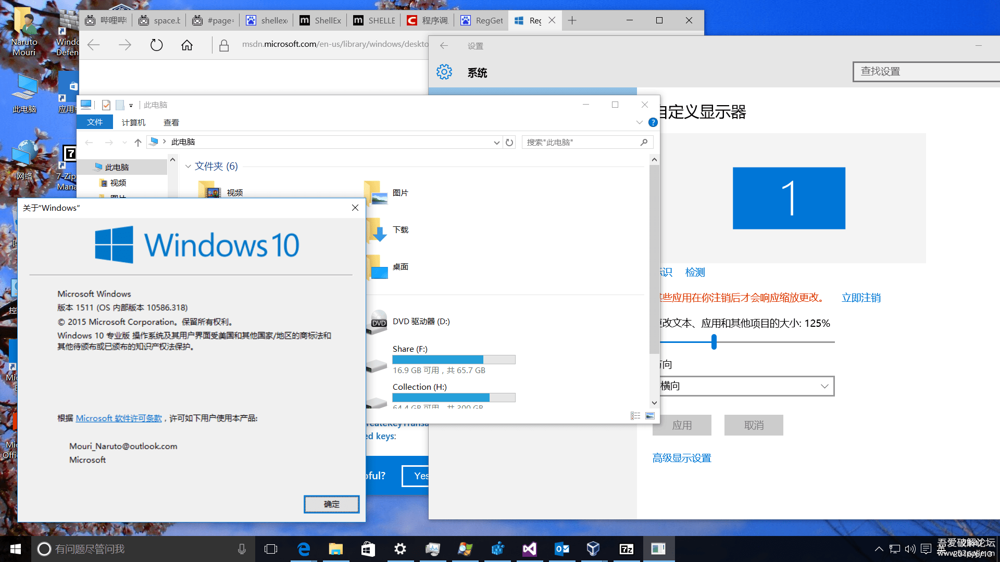

在 Windows 10 中为文件资源管理器启用 Per-Monitor DPI Awareness 模式
众所周知，微软从 Windows 8.1 开始在 Windows 中添加了 Per-Monitor DPI Awareness 模式。也就是说 Windows 8.1 及之后的 Windows 版本下运行的应用只有实现了 Per-Monitor DPI Awareness 模式支持才能算是真正的支持高 DPI 缩放。
如果你仅实现了 System DPI Awareness 模式支持，在多个 DPI 缩放比例不同的显示器下把窗口从一个显示器拖拽到另一个显示器， 或者在 Windows 10 即之后的版本下修改了 DPI 缩放比例而没有注销，Windows 将会使用 DPI 虚拟化进行强制缩放， 用户就会看到一个模糊的软件界面并大概率会对开发者进行吐槽。
我在 2016 年 6 月的时候试图给我的项目实现 Per-Monitor DPI Awareness 模式支持，但是非客户区无法正常缩放， 譬如应用窗口中的内容正常的响应了 WM_DPICHANGED 事件而正常缩放，但是标题栏、菜单栏、菜单这样元素却完全没有缩放。
但是发现微软使用 Win32 API 实现的运行对话框的标题栏、菜单栏和菜单却能正常动态缩放，于是我对此表示相当好奇。 经过使用 IDA 一番查找，我发现运行对话框的实现在 Shell32.dll 中的一个叫 RunFileDlg 的函数里面。 虽然那时的我暂时没找到微软的做法，但是偶然发现一个 API 让我感觉很有意思，伪代码如下：
1 | |
粗略看了看，这是微软在文件资源管理器内部使用的是否开启 Per-Monitor DPI Awareness 模式判断逻辑， 于是我顺理成章地猜测如果这个函数能返回 true，那么文件资源管理器就可以支持 Per-Monitor DPI Awareness 模式了。 毕竟文件资源管理器默认以 System DPI Awareness 模式运行，在 Windows 10 一调整 DPI 缩放比例就会模糊令人相当难受。
于是我尝试在 HKLM\SOFTWARE\Microsoft\Windows\CurrentVersion\FlightedFeatures 注册表键下创建值为 1 名为 PerMonitorAwareFileExplorer 的 DWORD 值然后重启文件资源管理器进程看看会有什么效果。
然而调整 DPI 缩放比例后不注销结果还是模糊的，一看文件资源管理器对应的进程还是 System DPI Awareness 模式， 突然我想到我可以去掉文件夹选项的 在单独的进程中打开文件夹窗口 试试，于是文件资源管理器进程总算是 Per-Monitor DPI Awareness 模式了；这让我感觉很有戏，于是我尝试我打开文件资源管理器后把 DPI 缩放比例从 100% 调整到 125% 并且不注销；文件资源管理器正常缩放而且界面不模糊，相当的完美。

当然这个方法仅保证在 Windows 10, Version 1511 下测试通过，之后的 Windows 版本不保证还能这么做。
额外补充
这篇原本发布在吾爱破解论坛的文章是我探究如何实现一个真正的支持高 DPI 缩放的 Windows 应用程序的起点。
其实如果不使用本文的技巧在比较新的 Windows 10 版本且不启用 在单独的进程中打开文件夹窗口 的情况下， 文件资源管理器正常缩放而且界面不模糊。至少从 Windows 11 开始，即使启用了 在单独的进程中打开文件夹窗口 文件资源管理器也依然能正常缩放而且界面不模糊。从这点能看出微软在文件资源管理器的现代化方面还是很努力的。
当然在 2021 年回头思考，微软在 Windows 8.1 时期引入的 Per-Monitor DPI Awareness 模式不支持非客户区缩放是彻底的败笔， 毕竟在这种情况下如果要做适配，那就需要对非客户区的内容进行完整自绘，作为负责任的开发者还要实现无障碍等特性， 在这些要求的束缚下，只有头铁的人才会去实现相关支持，于是我相当能理解当时为啥 Windows 桌面应用对高 DPI 支持不好。
当然微软也意识到了这一点，从 Windows 10, Version 1607 引入的从 Windows 10, Version 1703 开始正式支持的 Per-Monitor (V2) DPI Awareness 模式，相对于 Windows 8.1 时期引入的 Per-Monitor DPI Awareness 模式而言支持对非客户区进行自动缩放，而且可以局部指定 DPI 感知模式，大大降低了适配难度。
顺便吐槽下，即使微软发布了 Per-Monitor (V2) DPI Awareness 模式，我记得在 Windows 10, Version 1809 之前，Windows 通用应用的标题栏右键出现的系统菜单在调整 DPI 缩放比例后并不会缩放，也就是依然是 Per-Monitor DPI Awareness 模式。 当然实际影响并不是很大，因为 Windows 通用应用是全自绘应用，除了系统菜单之外的菜单都是自绘的， 而系统菜单其实使用的情况也并不是那么常见，于是没有注意到这个问题也是正常情况。
如果你想更进一步，在 Windows 10, Version 1507 和 Windows 10, Version 1511 也希望能够实现媲美 Per-Monitor (V2) DPI Awareness 模式的效果以实现全 Windows 版本下在生效新的 DPI 缩放比例后依然不会模糊， 可以关注我的后续博客文章。
参考文献
相关内容
Windows 研究笔记本博客所有文章除特别声明外，均采用 CC BY-NC-ND 4.0 协议 ，转载请注明出处！